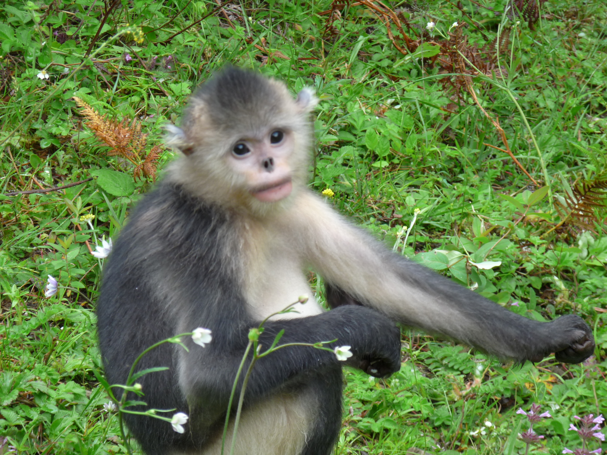

能猜对的人，是不是在证明自己是绝对的懒人呢？//@谌良仲:金丝猴宿营地，打一枪换一个地方，一般在一个宿营地最多不超过一周，类似于草原上的牧民的轮牧制度。 //@Ada李力:我也猜对了，自我表扬下。 //@谌良仲: 猫和狗会把其粪便埋起来，但猴子不是，猴子太懒，但懒人自有懒人的办法@谌良仲:#探秘白马雪山# 金丝猴在其宿营地过夜的时候，吃喝拉撒睡，都在宿营地里，那么，金丝猴是如何应对宿营地的公共卫生问题，以保障金丝猴部落群体的身体健康不受病菌的威胁？请大家开动脑筋，与金丝猴换位思考？ 